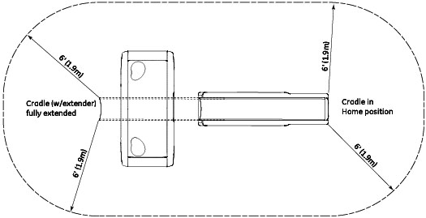
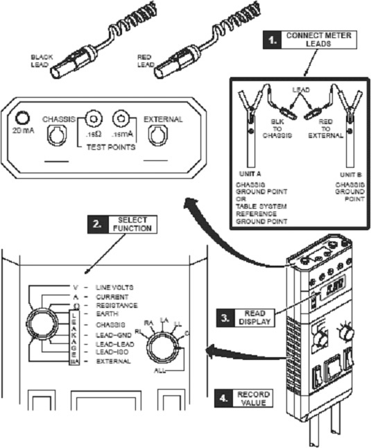
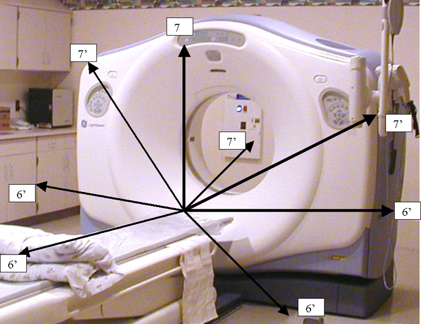
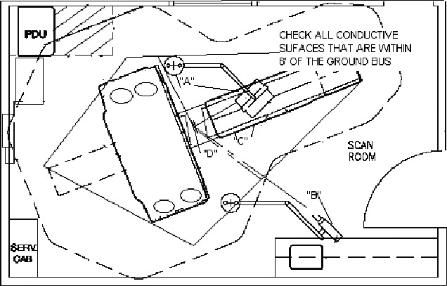

Operating Documentation
Direction 5134894-800, Rev# 9
GOC4 Upgrade Installation & Service Information
Operating Documentation |
| Required Persons | Preliminary Reqs | Procedure | Finalization |
|---|---|---|---|
| 1 | 10 mins | 20 mins | 10 mins |
This procedure must be completed after all options have been installed. It covers two safety checks:
Patient Touch current test (completed after installation)
System Ground resistance measurement (completed during installation)
| NOTE: | This procedure has been validated only with the Dale 600/601 meter. GE Healthcare cannot guarantee the accuracy of this procedure if any other meter is used. |
| Last Revised: | 12 October 2006 |
| Item | Qty | Effectivity | Part# | Manufacturer | |
|---|---|---|---|---|---|
| Standard service tool kit | 1 | - | - | - | |
| Dale 600 or 601 Meter (from Tool Pool) - See “Overview” Note | 1 | - | - | - | |
| Dale extended length leads - See “Overview” Note | 1 | - | - | - | |
| POTENTIAL FOR SHOCK | |
| GROUND WIRES WILL HAVE GROUND CURRENT PRESENT WITH POWER “ON”. | |
| FOLLOW APPROPRIATE SAFETY PROCEDURES FOR WORKING WITH AN ENERGIZED SYSTEM. |
| Follow ALL required safety and PPE procedures customary for your organization, when working on this product. | |
| Condition | Reference | Eff |
|---|---|---|
Only trained service personnel should service the GE CT Scanner. | - | - |
Footswitch cover must be removed. | - | - |
The following test conditions apply to this procedure:
Test with Table at maximum elevation and again with Table at minimum elevation.
Test to cover all points in an envelope described by Table travel from minimum to maximum extension (including table extender).
Test from both the head and the foot of the Table -- e.g., test assuming patient feet first position as well as patient head first.
Test above (7ft or 2.1m) and below (6ft or 1.9m) Table surface -- e.g., test assuming patient lying face down as well as face up.
Test for six feet (1.9m) envelope preventing patient access to all conductive surfaces including:
IV poles and tray assembly
Any smart step monitors and stands
Table bearing rails
All other conductive surfaces
Illustration 1:

| These instructions have been validated only with a Dale 600/601 meter. Due to the unique nature of this meter, GE Healthcare cannot guarantee the accuracy of these procedures when performed with any meter other than the Dale 600/601. | |
Move the table to ISO elevation.
Remove the Footswitch covers and the Gantry left side cover.
Refer to the Dale 600 or Dale 601 Operator’s Manual for instructions on the use of the Dale 600/601 meter for measuring leakage current (or refer to Illustration 2 for a quick overview).
Illustration 2: Using Dale 600 to Measure Leakage Current

Plug thndicators on the meter.
Connect one end of the shorter black lead to the chassis plug and connect the other end to the table ground bus.
Connect the longer red test lead (or the longer black lead) to the external plug on the top of the Dale 600 meter.
Set the function switch on the Dale to external. Use the external lead to touch the meter’s test terminal, to test that the meter is operational.
The black lead will be connected to the table base ground bus, and the read lead will be connected to the devices (components) under test.
| NOTE: | Your meter may have two black leads that are keyed for chassis and the ground connection. |
| NOTE: | A valid calibration sticker must be present on the meter used. Record this information on the GE 4879 form. |
Beware: Leakage current cannot exceed the following and is tested with power ON:
Critical care areas (invasive) - 10µa CT Systems
General care areas - 20µa
Not intended for patient area - 50µa
Testing must be completed between the system reference ground point (Table Base) to unit reference ground points (i.e. Gantry and Table, see Illustration 3).
Illustration 3: Measurement Points

Test all conductive surfaces and components within patient reach or within 6 feet (1.9m) of the table and 7 feet (2.1m) above.
Measure at table maximum travels.
At some sites, wall outlet cover plates and sinks may become an issue.
Illustration 4: CT Leakage Current Map

Test all Optional components such as in room monitors, injector, overhead monitor suspensions, and table options.
Record these results in the data sheet (to be completed at install and during PM inspections).
| Gnd Bus to | Install <10µA |
| Any table ground points within the 6 foot (9.1m) range | |
| Any gantry ground points within the 6 foot (1.9m) range | |
| Injector assembly metal surface | |
| Boom-in-Room metal surface | |
| Monitors or metal surface | |
| Sink or metal surface | |
| Installed table accessories | |
| (other) | |
| (other) | |
| (other) |
| Be Aware of Static Discharge from: scan window, keypads, display, touch pads, or other plastic surfaces. | |
Procedure Hints:
Look for items that have abnormal measurements, high or low. These could indicate mis-wiring, loose connections, or poor connections due to corrosion, painted surfaces, etc.
High leakage could indicate a wiring error such as a neutral connected to the ground.
Fluctuating ground currents could indicate a short, poor connection, or facilities ground problem causing leakage currents from other areas of the facility to flow though our system grounds.
Refer to illustrations Illustration 3 and Illustration 4 for measurement visual descriptions.
Use a Fluke 87 or equivalent RMS Meter to verify the presence of less than 0.5 ohm of resistance between each of the following points:
Table 1: Resistance Verification - Site Ground
| FROM | TO | |
| PDU Ground Bus | Vault Ground |  Check box when complete Check box when complete |
| PDU Ground Bus | Table/Gantry raceway ground point | Check box when complete |
| Table/Gantry raceway ground point | Gantry Chassis | Check box when complete |
| Table/Gantry raceway ground point | Table Chassis | Check box when complete |
| Table/Gantry raceway ground point | Operator Console Chassis | Check box when complete |
| All Display or Computing Options (if any) | Operator Console Chassis | Check box when complete |
Connect the meter leads to the Fluke 87 meter.
Set the function switch to resistance ohms.
The black and red leads will be connected per table (data sheet) below.
All ground resistance testing is done with power OFF. Ground current will cause errors in the resistance readings.
Use lockout/tag out procedures.
Maximum ground resistance is 0.5 ohms impedance.
Using the table footswitch ground bar as a reference, check the ground resistance to all five (5) system grounds.
Record the measurements in the data sheet:
| System Ground Bus | Typical Reading | Site Data |
| Gantry Ground Stud | 0.5 Ohms | |
| Console Ground Stud | 0.5 Ohms | |
| PDU Ground Stud | 0.5 Ohms | |
| Table Ground Stud | 0.5 Ohms |
Hints:
Look for undersized ground wires, and repair.
Ground resistance readings should not fluctuate. If so, this indicates an intermittent
Reinstall Footswitch cover and Gantry left side cover.